FMOD Studio User Manual 1.10
- Welcome to FMOD Studio
- FMOD Studio Concepts
- Organizing the Project
- Authoring Events
- Working with Instruments
- Managing Assets
- Getting Events into Your Game
- Mixing
- Profiling
- Editing During Live Update
- Supporting Downloadable and User-generated Content
- Advanced Topics
- Event Macro Controls Reference
- Plug-in Reference
- Modulator Reference
- Built-In Parameters Reference
- Scripting
- Scripting API Reference
- Keyboard Shortcut Reference
- Glossary
- Appendix: Celeste Getting Started Guide
6. Managing Assets
Managing a project's audio assets is an important part of using FMOD Studio efficiently.
You can import, manage, organize, and audition audio files in the assets browser. The assets browser also allows you to add files you've imported to events and instruments, and to specify how they'll be encoded into banks.
In addition to importing audio files that you already own, you can buy a variety of audio files from our online store, FMOD.io.
The assets browser represents the actual files and folders in your project's "Assets" directory. Any change to the items displayed in the assets browser represents a change to those files and folders, and cannot be undone via the "Edit > Undo" menu item.
6.1 Anatomy of the Assets Browser
The assets browser displays the audio files and folders in your project's assets directory. It allows you to audition, edit, and organize your project's audio files, as well as to add those files to instruments and events. It can be found in the event editor and the audio bin windows.
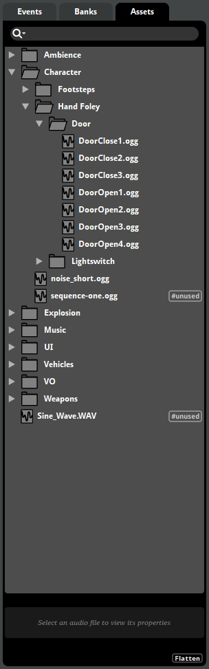
At the top of the assets browser is the assets browser search bar. Below it are all the files and folders in your project's "Assets" subdirectory. You can drag files from your file manager onto the assets browser in order to import them into your project. You can drag files from the assets browser onto instruments, tracks, playlists, and the events browser to use them in your project.
When an asset or folder is selected, its custom encoding settings and asset preview (if any) are displayed at the bottom of the assets browser.
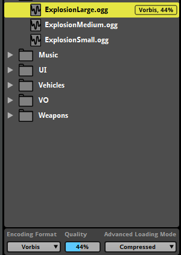
In addition to setting the encoding format for the current platform, you can set an asset's loading mode. For more information about loading modes and compression, see the Compression and Platform Encoding section of this chapter.
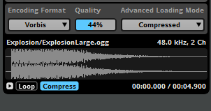
The asset preview allows you to view the waveform of an asset, and to audition it both with and without compression.
6.2 Folders and Files
All the audio files and folders in your project's "Assets" directory are displayed in the assets browser. This browser is your main tool for importing and organizing your project's audio files, and for adding them to instruments and events.
Please note that making changes in the assets browser makes changes to the contents of project directory on disk. If you create, delete, or move files or folders in the assets browser in FMOD Studio, the corresponding files and folders in the "Assets" folder on disk are also created, deleted, or moved.
6.2.1 Importing Audio Files
You can import an audio file into FMOD Studio by dragging it from a file manager window onto the assets browser. This copies the file into your project's "Assets" folder. If you drag the file onto a particular folder in the assets browser, it will be added to that folder.
You can also import audio files by selecting "File > Import Audio Files..." and selecting the files you want to import in the dialog. Files imported in this way are copied into your project's "Assets" folder.
6.2.2 Using Audio Files
You can use assets from the assets browser in your project by dragging them onto instruments, playlists, tracks, and the events browser.
Dragging one or more assets onto an audio track or master track creates a single instrument or multi instrument, depending on the number of assets selected.
Dragging assets onto the playlist of a multi instrument or scatterer instrument adds them to that playlist.
Dragging an asset onto the events browser creates a new event. If you drag more than one asset onto the events browser at a time, you'll be prompted to choose between creating a new event for each audio file, creating a new event containing a multi instrument, and creating a new event with one track per audio file.
6.2.3 Folders
Folders in the assets browser represent actual folders in your FMOD Studio project's "Assets" subdirectory. To create a new folder, right-click on an empty space and select "New Folder".
You can right-click on an asset or folder and select "Move Into New Folder" from the context menu to create a new folder in that location and move the selected item into that new folder.
You can move any item in the assets browser into a new folder by dragging it onto that folder.
6.2.4 Unimported Files
Audio files that were copied into the project's "Assets" directory using a file manager application are automatically tagged by FMOD Studio as '#unimported', and are marked with a yellow 'New!' icon in the assets browser.
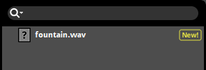
Unimported files are not included in your project's metadata, cannot be assigned custom encoding settings, and are ignored by FMOD Studio's integrated source control solutions.
Dragging an unimported audio file onto an audio track, an instrument, a playlist, or the events browser automatically imports it. You can also import an unimported file by right-clicking on it and selecting "Import" from the context menu.
6.2.5 Filename Clashes
If you attempt to move or import a file into the same location as a different file with the same name, you will be prompted to replace or rename the file.
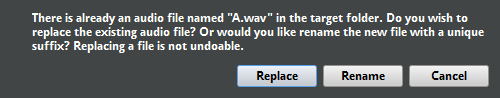
Choosing to replace the file overwrites the file already in that location with the file being imported or moved.
Choosing to rename the file automatically appends a number to the name of the file being imported or moved. For example, a file named "A.wav" will be renamed "A (2).wav".
You may also choose to cancel the operation. If you do, the file will not be imported, moved, or changed.
6.2.6 Open in an External Sample Editor
You can use an audio file editing application to edit any audio file in the assets browser. To do this, right-click on the audio file in the assets browser and select "Open in External Sample Editor" from the context menu.
This opens the audio file using the external sample editor specified in the "Assets" tab of the preferences window. If no external sample editor is specified, the file is opened using the application associated with that file type in your operating system.
Editing an audio file in an external application alters the file on disk in your project's "Assets" folder, and is not undoable.
FMOD Studio does not automatically update all instruments that use an asset when that asset is edited. To update all instruments that use an edited asset, right-click on the asset in the assets browser and select "Refresh" from the context menu.
6.2.7 Searching for Assets
You are able to search through your FMOD Studio project's assets in the assets browser.
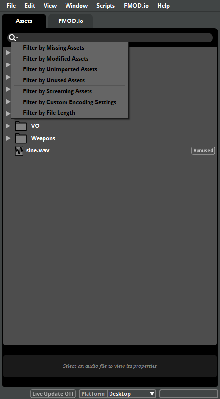
In addition to searching for assets by name, you can search for assets that fit particular categories by clicking the loupe icon and selecting an item from the menu. Each menu item automatically fills the search bar with a specific search term and filters the browser to display only files and folders that fit specific criteria, as follows:
| Menu item | Term | Displays |
|---|---|---|
| Filter by Missing Assets | #missing |
Assets that are missing. |
| Filter by Modified Assets | #modified |
Assets that have been modified in an external application. |
| Filter by Unimported Assets | #unimported |
Assets that are unimported (tagged as "New!" in the assets browser). |
| Filter by Unused Assets | #unused |
Assets that are not used in any event. Note that assets used in audio tables are still shown if they are not also used in events. |
| Filter by Streaming Assets | #streaming |
Assets that are streaming. |
| Filter by Custom Encoding Settings | #customized |
Assets and folders that have custom encoding settings. Assets in folders with custom encoding settings are not shown. |
| Filter by File Length | #query:(AudioFile.length > x) |
Find assets with a length longer than x (where x is a duration in seconds). |
These search terms may also be manually typed into the search bar.
For more information about searching for browser content, see the Searching section of the Organizing the Project chapter.
Searching for Assets Examples
| Example | Code |
|---|---|
| Search for all unused assets that are longer than 10 seconds | #unused #query:(AudioFile.length > 10) |
| Search for all streaming assets that contain the word "Ambience" | #streaming ambience |
| Search for all modified assets with custom encoding settings | #modified #customized |
6.3 Compression and Platform Encoding
In order for content to be used in your game, it needs to be built into banks. As part of this process, FMOD Studio automatically compresses and encodes your project's assets.
The assets browser allows you to set the encoding format to be used for each asset and asset folder in your project. These encoding settings, if specified for an asset or asset folder, are used for that asset or the assets in that folder in place of the default encoding setting specified for the platform in the "Build" tab of the preferences window. Encoding formats are always platform-specific, and so apply only for the platform selected when the new encoding setting is set.
The assets browser also allows you to specify the loading modes of individual assets within your project.
For information about banks and building your project, see the Getting Events into Your Game chapter.
For information about specific encoding formats, see the compression formats and platform settings section of the Getting Events into Your Game chapter.
6.3.1 Custom Platform Encoding Settings
When an asset or folder is selected in the assets browser, and that asset or folder does not currently have custom encoding settings for the current platform, the words "Click to add a custom platform encoding setting" appear in blue at the bottom of the assets browser. You can click on this text to add a custom encoding setting to the selected asset or folder.
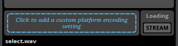
Once custom encoding settings have been added to an asset or folder, the blue text is replaced by the Encoding Format, Quality, and Advanced Loading Mode drop-down menus. These menus can be used to change the corresponding settings of the asset or folder. You can change the encoding and loading settings for multiple assets or folders at a time by multi-selecting them before adjusting their settings.

Assets and folders with custom encoding settings are labeled with those settings in the assets browser.
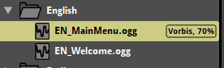
You can preview how your assets will sound when compressed by turning on audition with compression mode before auditioning them. In this mode, assets auditioned in the asset preview are compressed and encoded for the purposes of auditioning in the asset preview only. To turn on audition with compression mode, click on the "Compress" button in the asset preview. Audition with compression mode cannot be used to audition the XMA and AT9 compression formats.
6.3.2 Loading Modes
There are several different ways in which an asset can be loaded into memory for use in your game. Each loading mode has its own advantages and disadvantages.
Assets with compressed loading mode are loaded into memory in compressed format when loaded, and then decompressed when played. This requires less memory than decompressed loading mode, but requires slightly more CPU when playing assets.
Assets with decompressed loading mode are completely decompressed into memory when loaded. This uses more memory than streaming loading mode and compressed loading mode, but requires very little CPU when playing assets. This loading mode is most commonly used for short assets that are played frequently and for mobile platforms.
Assets with streaming loading mode are continuously loaded piecemeal from disk into a small memory buffer while playing. This substantially reduces the memory required to load and play assets. However, most platforms can only support a single-digit number of simultaneously playing streams, as streaming assets require constant disk access while playing. Streaming loading mode is most commonly used for music and background ambiences.
By default, assets ten seconds or longer are automatically set to use streaming loading mode. Other assets default to compressed loading mode. You can change this behavior in the assets tab of the preferences window.
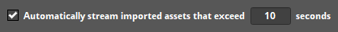
You can change the loading mode of an asset with custom platform encoding settings by using the advanced loading mode drop-down menu.
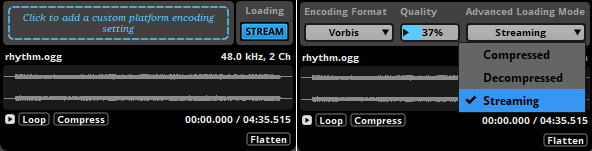
You can change the loading mode of an asset that does not have custom platform encoding settings by clicking on the "Stream" button. This toggles between decompressed and streaming loading modes.
Because streaming assets are loaded as they play and must be buffered before they can begin playback, an instrument that plays a streaming asset may exhibit latency when triggered. It is therefore best to use non-streaming assets in instruments that require low latency.
6.4 Consolidating Assets
It's occasionally necessary to replace one audio file in your project with a different audio file, or with a newer version of the same audio file. When doing this, it is not necessary to manually edit every instrument in which the old file was used. Instead, you can use the assets browser to consolidate the new and old files.
Consolidating assets is not undoable, and deletes the replaced assets from your project's "Assets" folder on disk.
To consolidate some files, you must first multi-select the audio files to be consolidated in the assets browser. To multi-select audio files, hold down the 'Shift' or 'Ctrl' keys when clicking on the files you want to add to the multi-selection. Make sure the selection includes both the audio file(s) you want to replace and the audio file you want to replace them with. Then, right-click on the file you want to replace the other files with, and select "Consolidate..." from the context menu.
Consolidating assets deletes all assets in the selection other than the one on which you right-clicked. It also automatically replaces all references to the deleted assets with references to the asset on which you right-clicked.
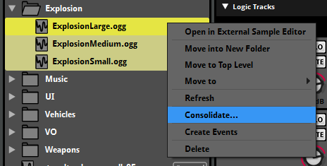
For example, in the above screenshot, right-clicking on "ExplosionLarge.ogg" and selecting "Consolidate..." from the context menu would cause "ExplosionMedium.ogg" and "ExplosionSmall.ogg" to be deleted from the project, and would also update all instruments that reference "ExplosionMedium.ogg" and "ExplosionSmall.ogg" to reference "ExplosionLarge.ogg" instead.
6.5 Dealing with Missing Files
FMOD Studio monitors the contents of your project's "Assets" folder for changes. Should an audio file be moved, deleted, or renamed outside of FMOD Studio, it is automatically tagged as "#missing" in the assets browser. Changing the path of your project's assets folder in the Assets tab of the Preferences dialog also results in missing files if the files are not found under the new path.
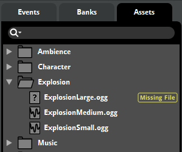
When FMOD Studio tries to play an instrument that contains a missing file, it plays no audio for that asset. If you try to audition a missing audio file in the asset preview, an error message is displayed, stating that the file cannot be found. A similar error message is displayed when trying to build a bank with a missing file.
You can search for missing audio files by searching for "#missing" in the assets browser search bar.
The simplest way to fix a missing file is to add a file with the same filename as the missing file to the folder where the missing file is supposed to be. After replacing the file, right-click on it in the assets browser and select "Refresh" from the context menu to update all instruments that use the formerly-missing asset throughout your project.
Another way is to consolidate the missing asset with another asset in your project. For more information about consolidating assets, see the consolidating assets section of this chapter.
6.6 FMOD.io
FMOD.io is an online service where you can preview, purchase, and download audio files for use in your projects. All these files have been specially selected for use in games, and are brought to you by Soundrangers and Sound Ideas.
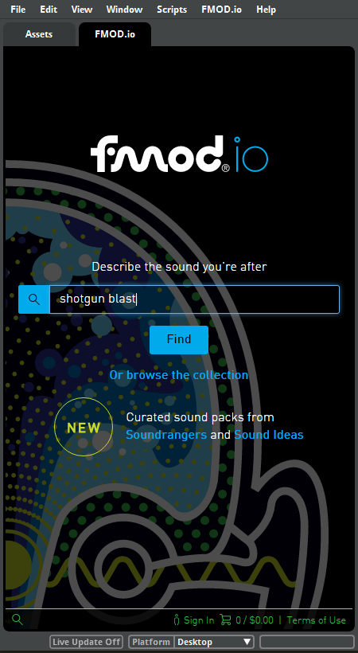
To access FMOD.io, either click on the FMOD.io tab in the audio bin window, or select "Jump to FMOD.io" from the "FMOD.io" menu.
You will need to sign in to an FMOD.com account in order to purchase or download audio files from FMOD.io. If you do not already have an FMOD.com account, you can sign up for one at www.FMOD.com. Creating an FMOD.com account automatically adds 50 free audio files to that account's library.
All audio files purchased through FMOD.io are yours to keep forever, and are licensed for use in any media you choose. For more information on licensing and the terms and conditions of use, please click on the "Terms of Use" button located at the bottom right of the FMOD.io window.
6.6.1 Browsing the catalog
You can browse everything that FMOD.io has to offer by clicking on the "Browse the Collection" link underneath the search bar.
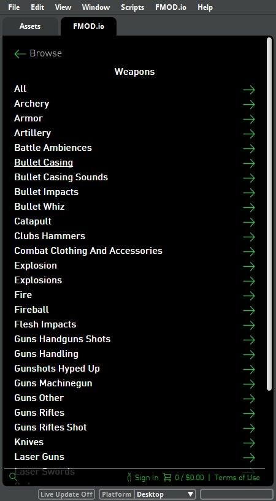
You can also search the catalog for specific audio files by typing search terms into the search bar and clicking the "Find" button.
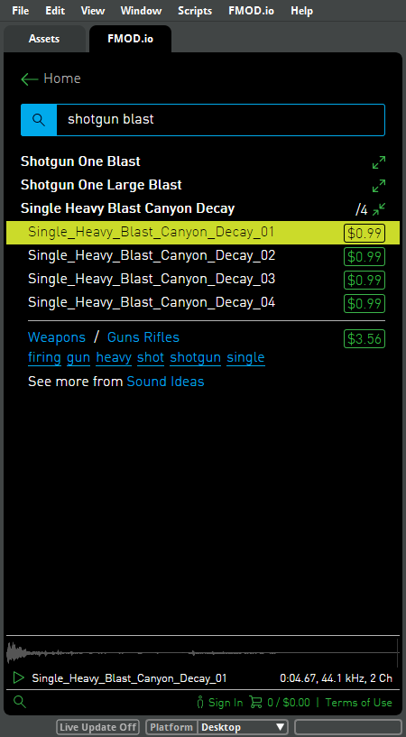
Results with a right-facing green arrow are categories of audio files. You can click on any category to view the files and bundles it contains. You can go back up a category by clicking on the Back button at the top left of the FMOD.io window.
Results with a forward slash and a number next to them are bundles of multiple audio files.
You can click on any audio file or bundle of files to view its details. While viewing the details of a file or bundle, you can preview an audio file by clicking on its name.
6.6.2 Purchasing from FMOD.io
Clicking on the price next to an audio file adds it to your cart.
The total number of items in your cart and their total value is displayed at the bottom of the window next to the shopping cart icon.
You can click on this icon to view the contents of your cart. Clicking on the "Checkout" button prompts you to enter payment details and finalize your purchase.
6.6.3 Importing audio files from FMOD.io
To import audio files from FMOD.io into your project, sign in to FMOD.io and click on your account name at the bottom of the window to view your library of purchased sound files.
You can navigate through your library by clicking on the categories and sub-categories. To import a file into your project, drag it onto the assets browser. You can also drag files directly onto instruments, playlists, tracks, and the events browser as if you were using an already-imported asset.